BIBIMBAP
If donburi is Japanese soul food, bibimbap is its Korean counterpart. It’s existed since at least the sixteenth century and has never gone out of style. It’s easy to see why: it’s infinitely customizable, and it can be as simple or as elaborate as you’d like.
Bibim translates as “mixed,” while bap is the Korean word for “rice,” and as its name suggests, bibimbap is rice mixed with stuff. Typically that stuff is a mix of fresh and briefly stir-fried vegetables, pickled vegetables (such as kimchi), and a swirl of Korean-style sweet fermented chile paste or fermented soybean paste (gochujang or doenjang; see here). Frequently, marinated cooked meat and a fried egg will be added to the top as well.
The best way to enjoy bibimbap is in a heavy stone bowl called a dolsot. The bowl is preheated in an oven or on the stove, then the inside is coated with a thin layer of sesame oil before the rice is added, which sizzles and forms a crispy brown crust. You mix the vegetables, meat, egg, and rice, eat your meal, then scrape the crust out with a spoon. Finally, hot water or barley tea can be added to the bowl to make a scorched rice infusion called sungnyung to finish the meal. Don’t have a dolsot? Don’t worry; you can crust up your rice in your wok just fine.
Bibimbap was originally developed centuries ago as a peasant dish intended to transform inexpensive scraps of vegetables and meat into a hearty meal, and I like to think of it the same way, using whatever ingredients I happen to find in my fridge to top it. So long as you have a mix of quickly stir-fried vegetables, raw fresh vegetables, and pickled vegetables, the dish will work (even without the meat).
Cooking bibimbap can seem a little daunting when you think about all the individual toppings, but it’s actually a very streamlined, simple process. Virtually every topping is served in one of three ways: dressed raw, simply blanched in simmering water, or very briefly stir-fried. As far as work flow goes, you can prep all your ingredients first, bring a couple cups of salted water to a simmer in your wok or saucepan, simmer ingredients that need simmering in succession, then empty out the pan and set it back on the stove to briefly stir-fry those that need to be stir-fried. I never bother cleaning my wok between ingredients when stir-frying for bibimbap. Finally, if you’d like, you can crisp up the rice in the wok just before topping and serving.
Here are a few ideas for toppings:
INGREDIENTS |
PREPARATION |
Cucumbers, zucchini, daikon radish, summer squash |
Slice and salt, then set aside for 10 minutes. Squeeze out excess moisture and season with sesame oil, minced garlic, and sesame seeds. Alternatively, stir-fry for 1 minute with a little sesame oil; season to taste with salt and sesame seeds. |
Carrots, shiitake or button mushrooms, eggplant, bell peppers |
Finely julienne or slice and stir-fry with sesame oil until tender-crisp. Season with salt and pepper. |
Bean sprouts, spinach, and other tender greens |
Blanch in boiling water for 1 minute for tender greens or 3 minutes for bean sprouts, rinse under cold water, squeeze out excess moisture, then dress with a little sesame oil and minced garlic. |
Beef, chicken breast, or pork |
Cut meat into thin slices or fine matchsticks. For every 4 ounces of meat, add 2 teaspoons (10 ml) soy sauce, 1 teaspoon (5 ml) sesame oil, 1 minced garlic clove, and 2 teaspoons (10 ml) honey or sugar. Stir-fry in vegetable oil over medium-high heat until just cooked through, about 1 minute. Sprinkle with sesame seeds |
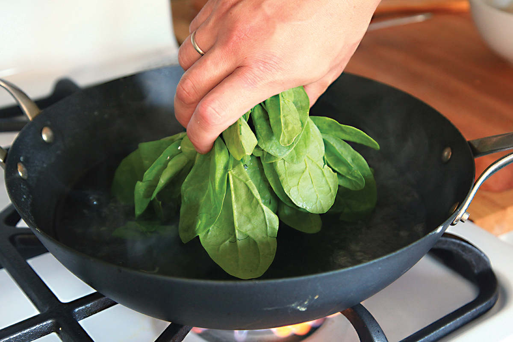
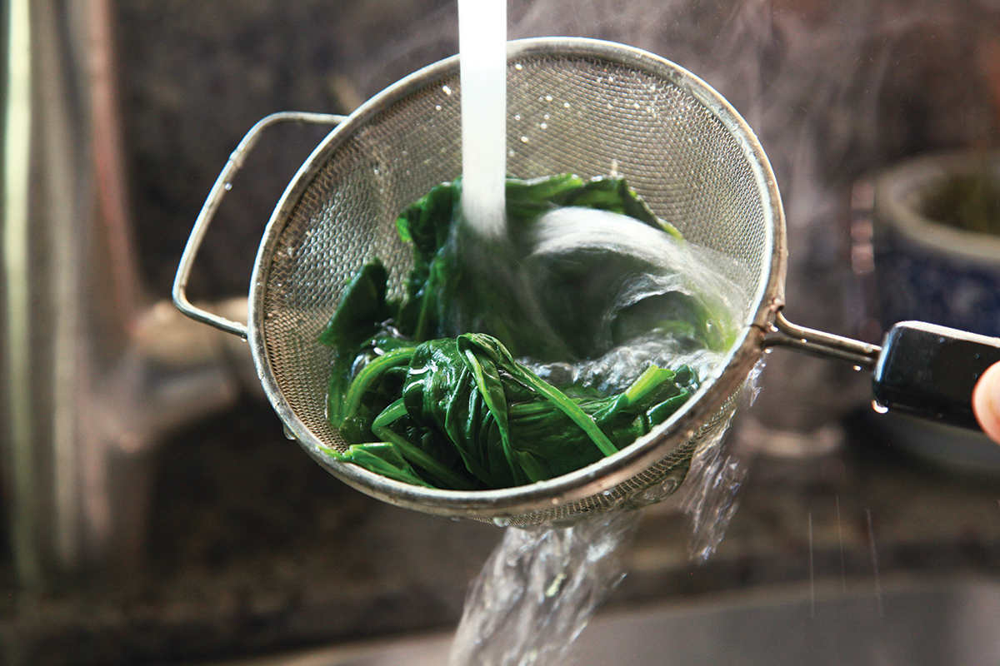
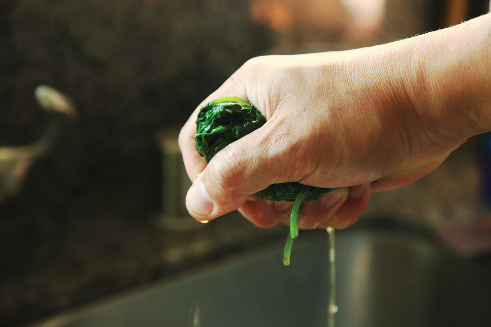
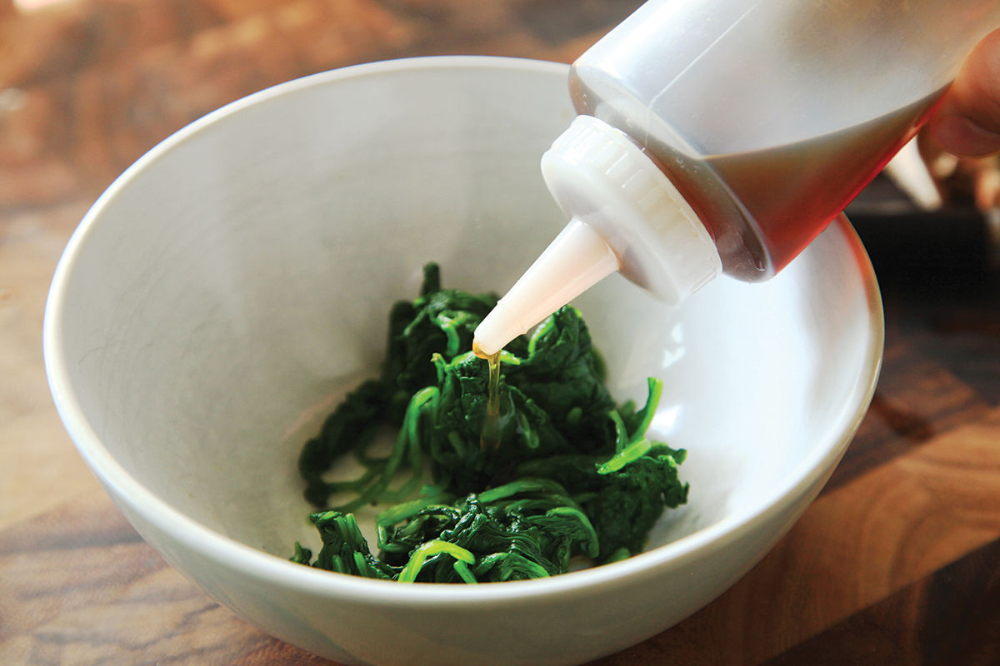
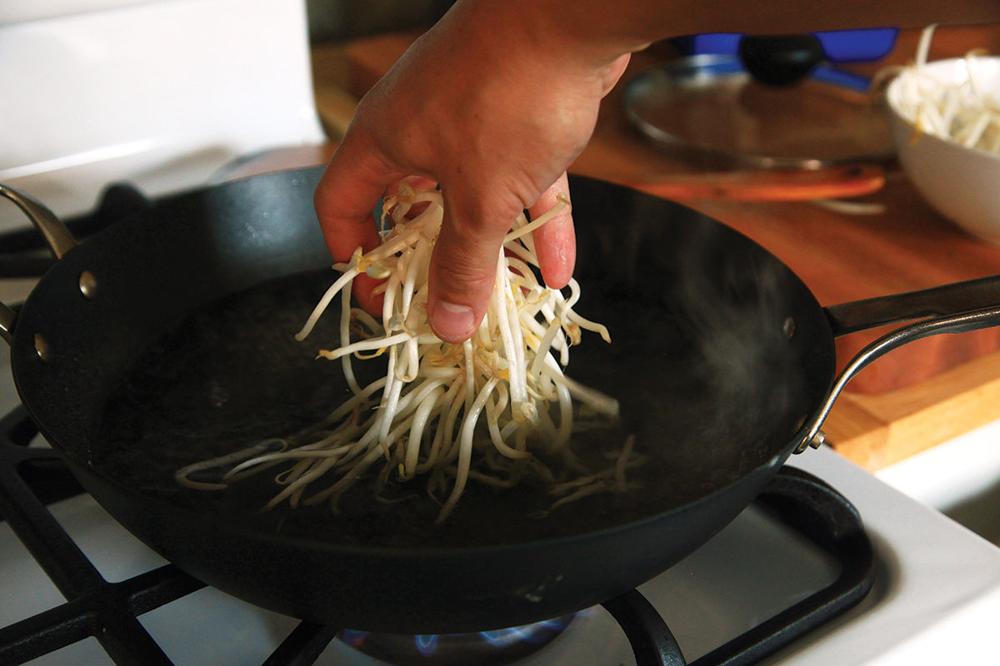
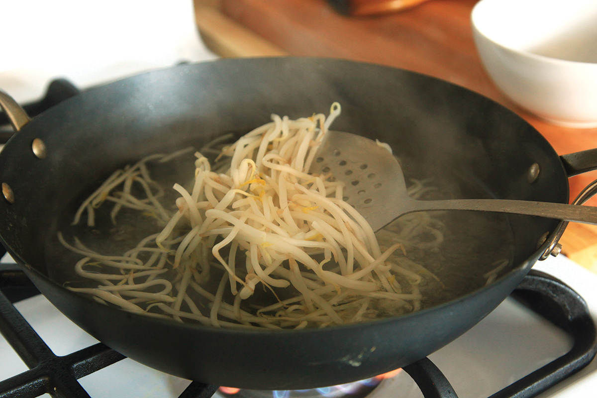
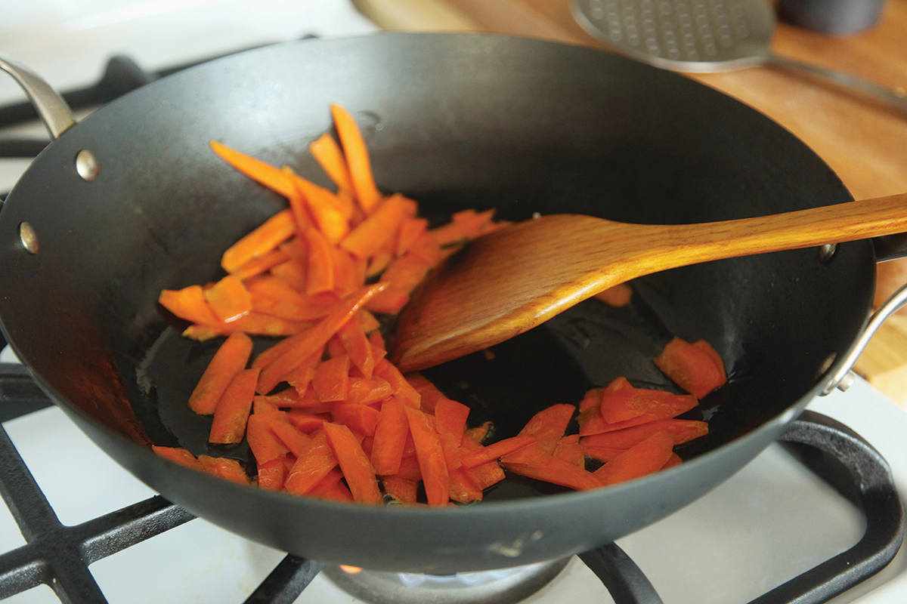
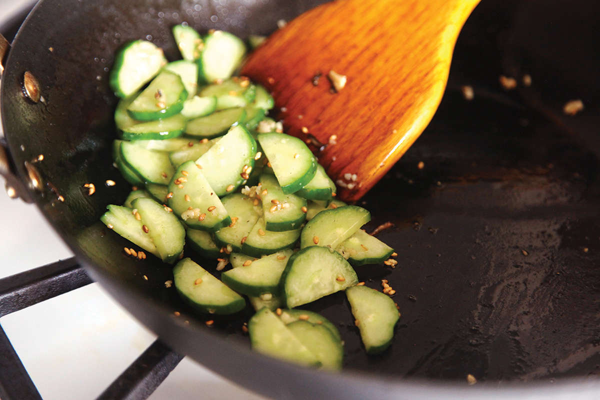
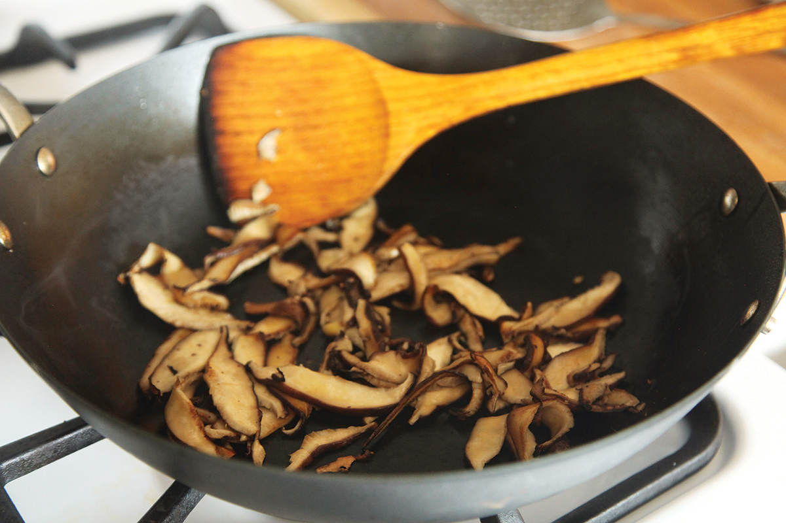
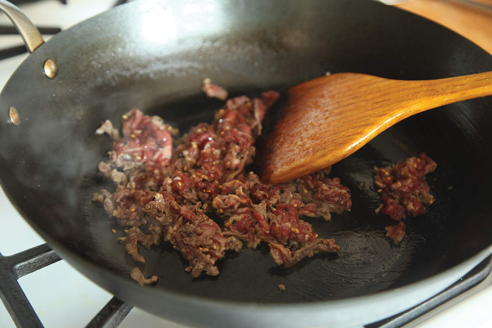
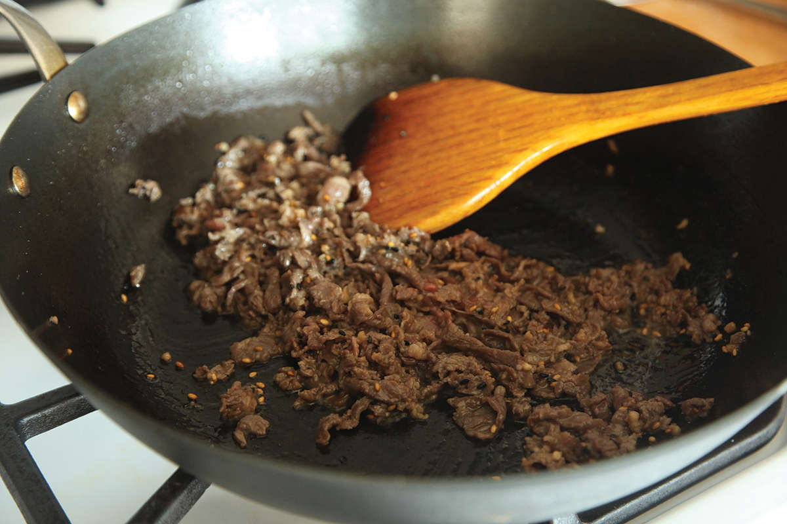
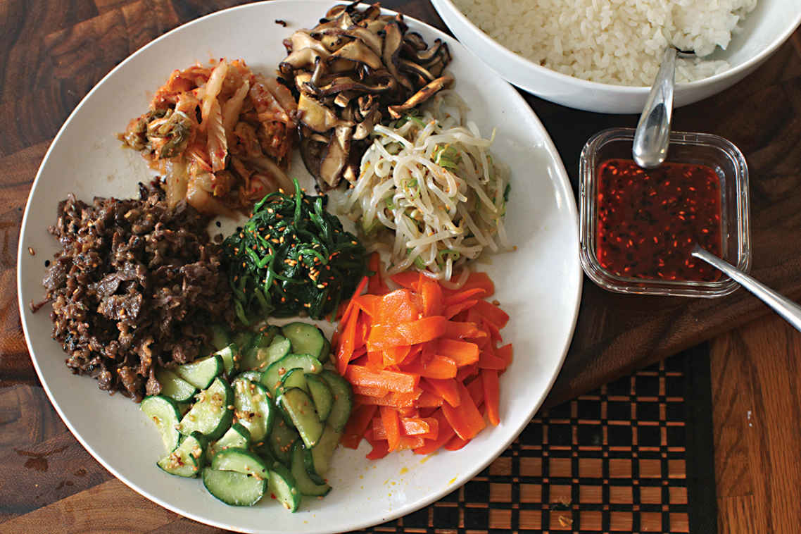